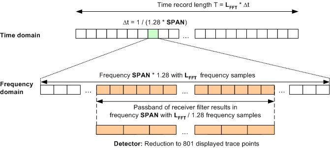

The FFT spectrum analyzer records LFFT equidistant samples in an FFT window with a time record length T. A time-domain window of Gaussian shape and α = 3.8 is applied to the raw data to reduce typical errors like spectral leakage and level errors. The windowed data set is transformed to the frequency domain. A receiver filter reduces the calculated spectrum to the useful central part. In a last step, the frequency samples in the useful part are reduced to a fixed number of 801 using a peak or RMS detector.
The measurement procedure is shown in the figure below. The R&S CMW offers the desired SPAN ("Frequency Span"), the number of raw samples LFFT ("FFT Length"), and the "Detector" type as setting parameters. The sampling rate fs = 1/Δt and the time record length T are automatically adjusted to the selected SPAN and LFFT values.

If the peak detector is selected, the number of frequency samples is multiplied by four to reduce the level errors introduced by the Fourier transform. The process is commonly referred to as upsampling. It reduces the inherent level errors over the entire frequency span to values smaller than 0.05 dB.
Due to these properties, the FFT spectrum analyzer is appropriate for accurate level and frequency measurements.